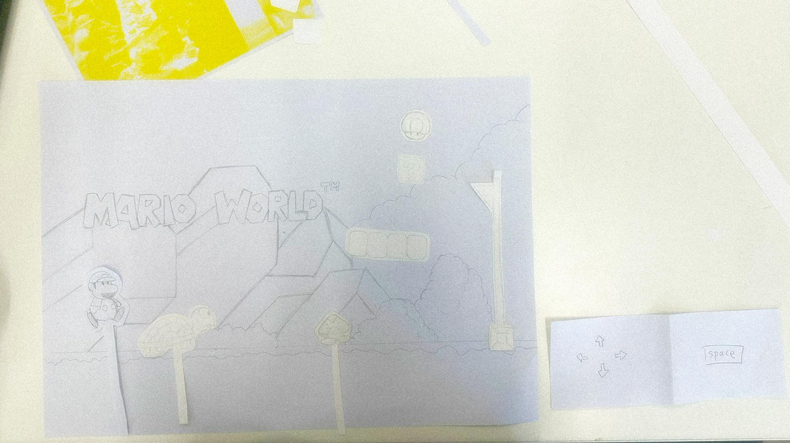
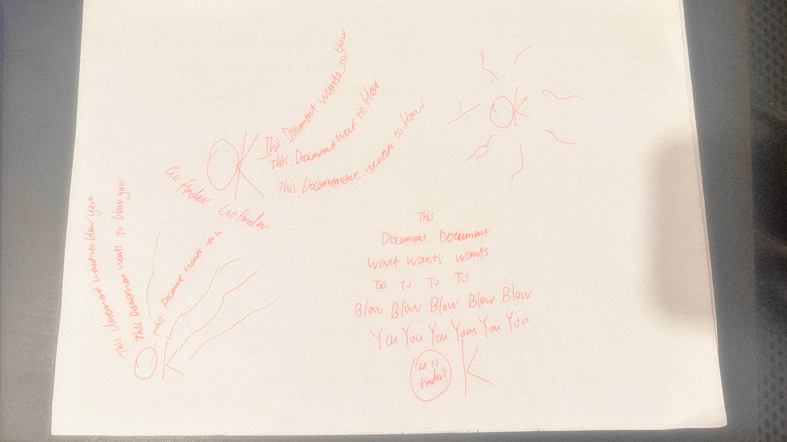
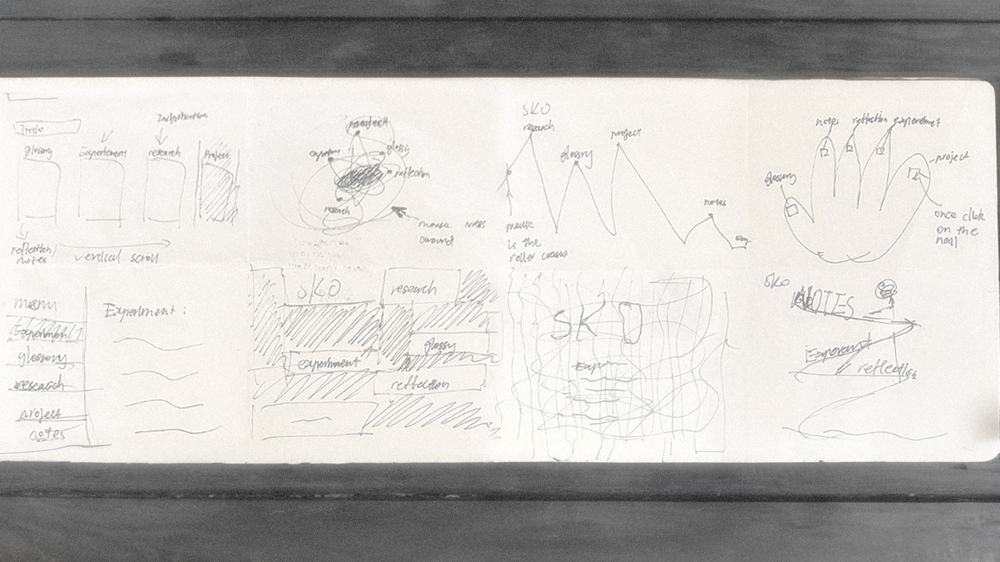
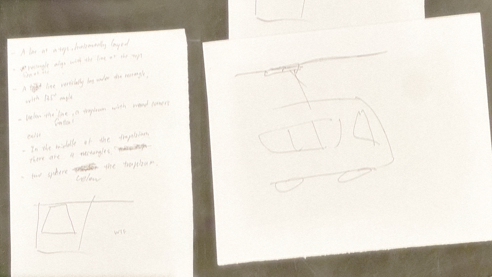
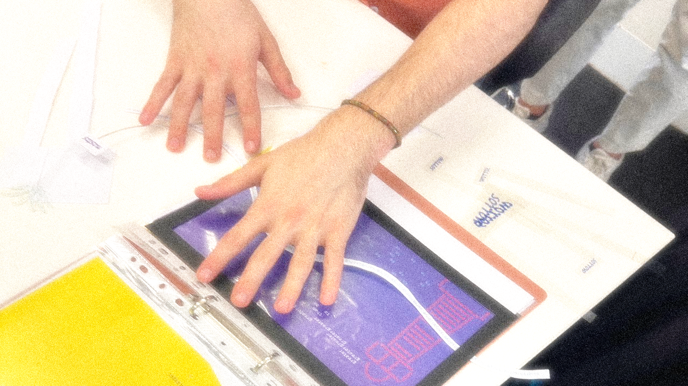
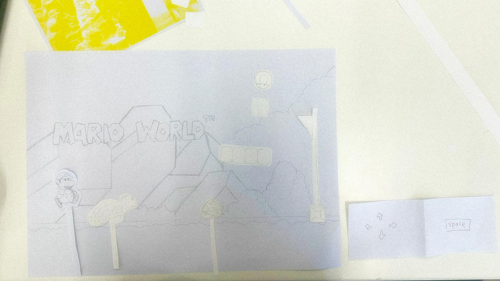
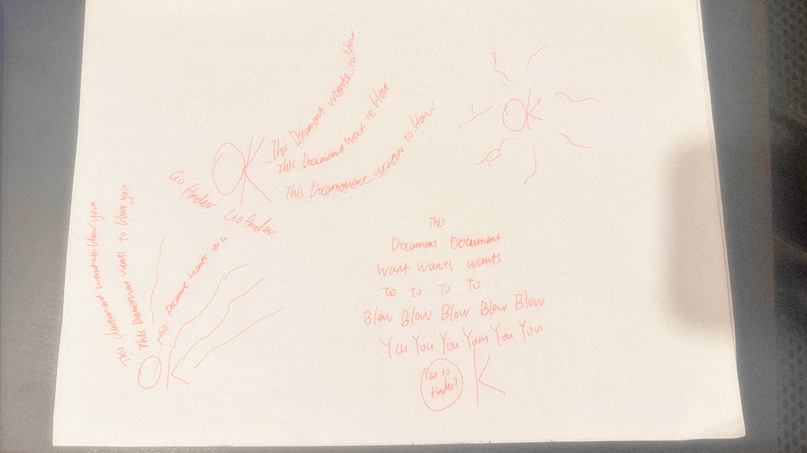
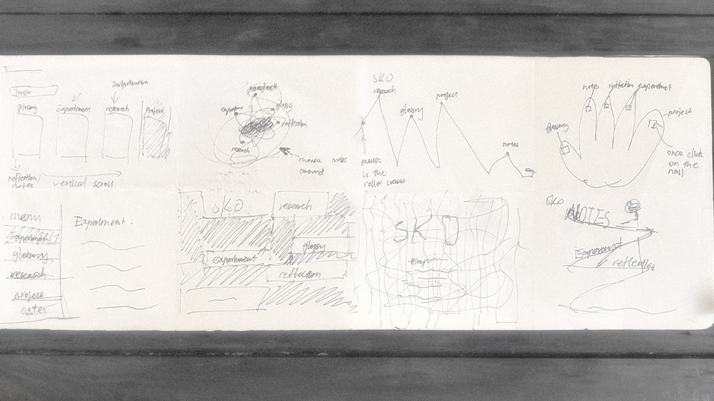
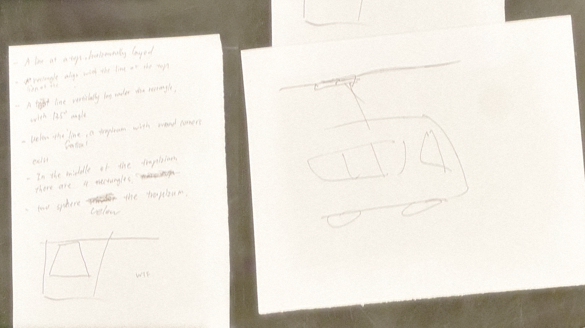
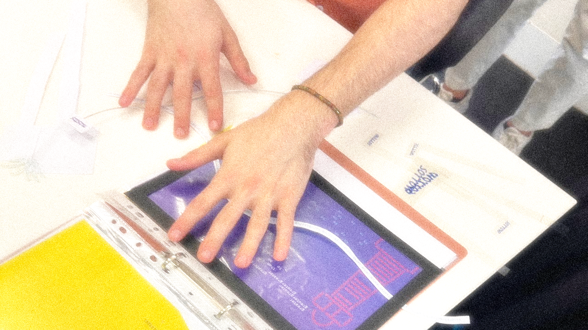

This studio focuses on exploring typography through coding. The programming languages covered include HTML and p5.js. Over the 12-week course, the morning sessions are dedicated to exploring design possibilities through coding, engaging in class activities, and reviewing research materials provided by the studio lead. The studio emphasises the transformation of design in the digital age, with a special focus on kinetic typography. In the latter half of each session, we dive into learning actual coding skills, building the foundation to create our final projects. While the course is incredibly challenging, the results are equally rewarding.
 









This is a quick activity designed to help us understand how we can transform words into art and then translate that into code. It's a great teaser for our studio, sparking ideas about how words can be dynamically placed. This is an important aspect of thinking about kinetic typography and how we approach it creatively.
This is where we worked in a group to find a retro game and create a paper prototype of it. During the process, choosing a simple game like Mario was key. Time and skill are limited, so it’s important not to aim too high. Assigning clear roles was also essential—our group had four people drawing different elements and two people writing descriptions and movements. One thing I think we could improve on if we did it again is communication. We need to ensure everyone understands the chosen game version, confirm the sections we’re each responsible for, and make sure that if one person collects assets, everyone has access to them. It’s crucial for everyone to have the same understanding of the task, whether there are misunderstandings or not, so we can all stay on the same page. We are a team!
We’ve done two sets of Crazy Eights, which is an idea generation method similar to brainstorming. The difference is that we only have one minute to generate an idea, for example, a website layout, and we create eight different versions. This method is really helpful because the time pressure makes me extremely focused. One trick I find useful is combining it with forced association. For instance, if I'm working on a website layout during Crazy Eights, I might force an association with a rollercoaster. This helps spark crazy ideas and leads to imaginative solutions in a very short time.
It was an extremely helpful activity. For the first time, we had others guess what we drew based on the pseudocode I provided. I have to admit, people had trouble understanding my code because my commands weren't as precise as they are for machines. There were many positioning issues, as I didn’t specify the length or exact position of each shape clearly. This was a valuable lesson, which has been beneficial when I worked further with shapes in HTML and p5.js.
This was the time we exchanged ideas for our prototypes, and I gained a lot of inspiration and valuable feedback from reviewing others’ work and receiving feedback on mine. One noticeable piece of feedback I received was to try using other chaotic systems, like the three-body problem, which could make the visuals more interesting. Although I didn’t choose to pursue it due to coding difficulties, this feedback made me rethink how to approach the pendulum system to make it more fun and engaging. A key takeaway here is that even if a suggestion isn’t directly useful, understanding the logic behind it can be very helpful. Every classmate brings a unique perspective.